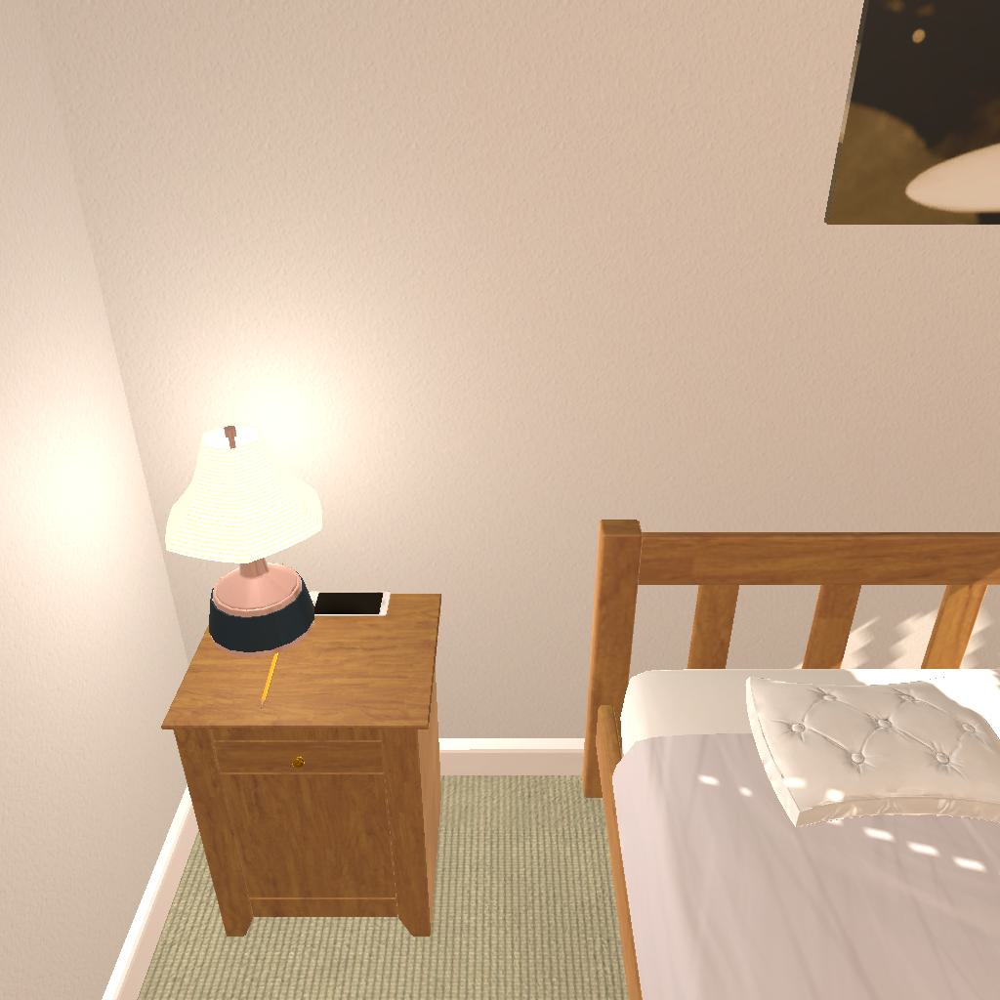

---------------------------------------------------------task: 0---------------------------------------------------------
--------------------------------------------------------------------------------------------------------------------------------------------------------------------
--------------------------------------------------------------------------------------------------------------------------------------------------------------------
Step:--------------------------------------------------------------------------4-------------------------------------------------------------------------------
----------------------------------------
VLM Prompt:
Image1:
Image2:
Image3:
**Instruction**
1. Analyze the provided images to identify all visible household objects and compare the difference between images (e.h. whether the object is opened or not and taken on hand or not), focusing on those relevant to the task description "look at alarmclock under the desklamp."
2. Use the analysis of images and the task hint "The agent must find an object of the desired type, locate and turn on a light source with the desired object in-hand." to answer the question: what is the most reasonable action in the choices for the task description "look at alarmclock under the desklamp"?
3. Decide and write the answer using the template: The answer is: (i): , where i is the real number. If there is no desired object in images, search every place based on **Initial Observation** to find the object. And if no one is exactly correct, choose a similar answer.
**Initial Observation**
You are in the middle of a room. Looking quickly around you, you can see bed (1), sidetable (1), drawer (1-11), dresser (1), safe (1), laundryhamper (1), garbagecan (1)
**Answer Choices**
(1): go to bed 1
(2): go to sidetable 1
(3): go to dresser 1
(4): go to drawer 2
(5): go to drawer 3
(6): go to drawer 4
(7): go to drawer 5
(8): go to drawer 6
(9): go to drawer 7
(10): go to drawer 8
(11): go to drawer 9
(12): go to drawer 10
(13): go to drawer 11
(14): go to safe 1
(15): go to laundryhamper 1
(16): go to garbagecan 1
(17): open drawer 1
(18): close drawer 1
(19): examine drawer 1
**Answer**
Let's think step by step by following the instructions.
----------------------------------------
----------------------------------------
Original Response:
1. Analyzing the images:
- All three images show a nightstand with a drawer and a lamp on top of it. There is also a bed visible in the images.
- The images do not show any alarm clock under the desk lamp.
- The drawer of the nightstand appears to be closed in all images.
- There is no object taken in hand in any of the images.
2. Based on the task hint and the initial observation, the agent is supposed to find an alarm clock and then locate and turn on a light source with the alarm clock in hand. Since the images do not show an alarm clock under the desk lamp, the most reasonable action would be to search the places where an alarm clock might be found.
3. The answer is: (17): open drawer 1. This action is chosen because the nightstand's drawer is a logical place to search for an alarm clock, and it's the closest object to the desk lamp that needs to be turned on with the alarm clock in hand.
----------------------------------------
----------------------------------------
>>> Refine Original VLM Response and Get Pure Action: open drawer 1
----------------------------------------
-----------------------------------------------------------------
Running time: 11.381645917892456 seconds
Total Money: 0.15184999999999998
-----------------------------------------------------------------
-----------------------------------------------------------------
Text Observation:You open the drawer 1. The drawer 1 is open. In it, you see a pillow 1, a desklamp 1, a cellphone 1, and a pencil 1.
-----------------------------------------------------------------
UNSUCCEED